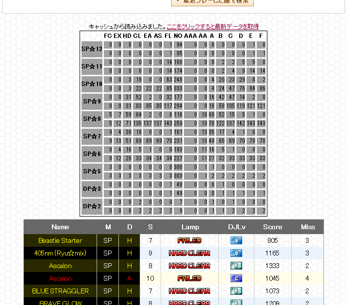

beatmania IIDX 20 tricoro 楽曲データサイト補助ツール for Chrome
tricoro.user.js
使い方
項目名をクリックしてソート
セルをクリックして同じ値の行だけ表示
最後まで読み込みが完了するとキャッシュを作って保存し、次回はキャッシュから読み込んだデータをすぐに表示します
難易度(☆)データは
@nob_m_IIDX
さんの
Score Viewer for beatmania IIDX 20 tricoro
から抽出させていただきました
注意
上記スクリーンショットに含まれる画像などの著作権者は Konami Digital Entertainment です
公式サイトに過剰な負荷をかけないよう注意してください
スクリーンショット
